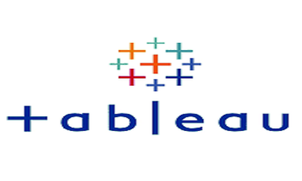

Performed data wrangling on the WeRateDogs dataset using Python libraries such as Numpy, Pandas, Seaborn, Matplotlib, and Json. I obtained the dataset from a Twitter
account that focuses on rating dogs. During the data wrangling process, I gathered, assessed, and cleaned the data, addressing issues related to data quality and tidiness.
Once I had cleaned the dataset, I analyzed and visualized the data to gain insights, such as the most common dog breed, dog stage, most common dog name, and tweet sources.
.jpg)
• Performed random sampling on 6,362,620 online payment big dataset to generate 300,000 subset with same 0.9995% fraudulent cases and 0.0005 non fraudulent case.
• Preprocessed and Carried out feature engineering to generate new features. Experimented three (3) feature selection techniques:
the SelectKBest, Recursive Feature Elimination (RFE), and Boruta Feature selection with different machine learning models:
• Random Forest model have a better baseline performance with accuracy of 98% and auc of 0.98
.
Developed a model that detect tuberculosis using clinical data, imaging (like chest X-rays). Ensuredthat the detection method is cost-effective and scalable for deployment in low-resource environments. Aimedhigh sensitivity and specificity to minimize false negatives and false positives..
• Processed the image landmark dataset and implement data augmentation to improve test accuracy..
• Created a CNN architecture with 5 convolutional layers from scratch to Classify Landmarks
• Experimented using different pre-trained models and eventually used vgg-16 for the base model suitable for the classification task.
• Evaluated the test loss and accuracy to be 1.27 and and 70% respectectely
• The transfer learning model was exported using Torch Script and deployed in an app for user

• Extracted the CIFAR sample dataset from a hosting service, explored and transformed it into a usable shape and format, saved the data into train and test sets and eventually loaded into a production system (S3)
• Trained the model using AWS build-in image classification algorithm with the inference of 0.98% accuracy and deploy to an endpoint
• Drafted and deployed three Lambda functions for data generation, image classification and filtering out low-confidence inferences respectively and chained together using the Step Functions.

Performed customer segmentation on a credit card dataset obtained from kaggle. I carried out preprocessing which include cleaning, data transformation, normalization and principal dimensional analysis on the dataset, find the best k values,
sihoultte and building a model to divide the dataset into three segment.

Performed Exploratory analysis on a netflix dataset by using Postgresql to query the data for insights and
information about different movie genres and watch time in some state.

Tableau Dashboards for Projects. Interactive dashboards done to visualize key insights gotten from datasets.